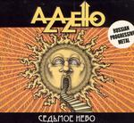

| Artist: | Azazello |
| Title: | Seventh Heaven |
| Label: | STARLESS STR06 |
| Length(s): | 62 minutes |
| Year(s) of release: | 2004 |
| Month of review: | [09/2005] |
| 1) | Beginning | (2.17) |
| 2) | Macrocosm | (12.02) |
| 3) | Microcosm | (10.51) |
| 4) | The Mystery | (8.29) |
| 5) | Restless Rest | (10.49) |
| 6) | Seventh Heaven | (8.55) |
| 7) | Blessing | (2.59) |
Beginning is the sort of intro or overture you might expect from an album like this. Macrocosm and Microcosm are so close together you don't really notice moving from the one into the other. These two tracks very much put the Malmsteen-type classical influences on display, forming a showcase of the band's possibilities.
The Mystery has a somewhat medieval sound. The flute is a main cause for this, but the vocal inflections and acoustic guitar help create the effect. Halfway into the track we go through what sounds like drunken bawling, setting us for a bridge led by piano, later returning to the original style. This track definitely has an original side to it. Having said that, I also thought it somewhat deviant from the style proposed by the album.
Restless Rest starts off with an erratic and very much restless break ridden intro. In the vocal sections there is some rest in the track, if only because that is needed to give them a proper backdrop. The instrumental sections however are quite experimental and easy to change direction or signature. Interesting, but disruptive too. Despite this the band refrain from going over the edge, helped by the semi climax they work towards midway through.
Seventh Heaven is more rock oriented, maintaining the technical ability. Due to this the track can get pretty pushy once we move into instrumental sections, while being loud and even somewhat pompous at other moments. Not the album's best cut.
Blessing is an outro of the expected type. After some two minutes silence this is followed by a ballad mainly led by piano and vocals. This track -despite being a tad on the simple side rhythmically- sheds the yoke of technique of the rest of the album, and due to that has a more sincere, less cerebral feel. Thus we have the situation that the ghost track is my favourite.